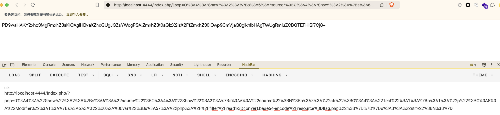
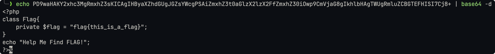

PHP反序列化之POP链学习 - MRCTF2020-Ezpop
本文以MRCTF2020-Ezpop这一CTF题目为例，详细记录了我在探索PHP POP链反序列化过程中的学习与实践经历，从题目分析、漏洞挖掘到技术实现，旨在提供实战参考与启发。
MRCTF2020-Ezpop 题目分析
源码
|
|
构造 PHP POP 链的过程
思路与原理
根据最后执行的语句来看
if (isset($_GET['pop'])){ |
在 if 判断语句中，需要从 pop 参数中拿去序列化字符串后进行反序列化操作。如果没有 pop 参数则直接生成 Show 这个类，然后将当前 PHP 文件直接以彩色格式打印出来。
那么很明显，我们唯一可以利用的就是反序列化了。接下来我们来分析下源码：
Modifier类- 这个类有
var属性是我们可以控制的。 - 这个类有一个
__invoke()魔术方法，需要当对象被当作函数调用的时候才能触发。 - 这个
__invoke()魔术方法中调用了append()这个方法，并将var属性的值传入进去。 append()方法中又包含了一个include()方法。- 所以最后
var属性的值被include()方法给包含了。 - 综上所述，如果能触发
__invoke()魔术方法、并控制var属性的值，则可以实现文件包含。
- 这个类有
Show类- 这个类有
source、str属性是我们可以控制的。 - 这个类有一个
__construct()魔术方法，需要当对象被创建时才能触发。 - 这个
__construct()魔术方法将index.php这个值保存在source属性中，并打印出Welcome to index.php。 - 这个类有一个
__toString()魔术方法，需要当对象被当作字符串的时候才能触发。 - 这个
__toString()魔术方法中返回了$this->str->source，假设$this->str是另一个类的实例，当访问source属性的时候，如果该属性不存在，则会触发__get()魔术方法。 - 这个类有一个
__wakeup()魔术方法，需要在反序列化时触发。 - 这个
__wakeup()魔术方法中首先检查source属性是否包含一些危险的协议（在检查的过程中，会触发__toString()魔术方法，当然这里需要是对象被当作字符串使用才行）。如果存在，则打印hacker，并将index.php这个值保存在source属性中。不过黑名单的方式总是可以绕过的。
- 这个类有
Test类- 这个类有
p属性是我们可以控制的。 - 这个类有一个
__construct()魔术方法，需要当对象被创建时才能触发。 - 这个
__construct()魔术方法将p属性初始化为一个空数组。 - 这个类有一个
__get()魔术方法，需要当访问不可访问的属性（protected或private)或不存在的属性的时候才能触发。 - 这个
__get()魔术方法将p属性的值保存在function属性中，并把function属性作为函数返回。这时，联系到Modifier类，如果p属性是Modifier类的实例，那么将对象作为函数调用返回，就会触发Modifer类中的__invoke()魔术方法。
- 这个类有
这就是对整个代码的解读，这时候就需要将POP链串起来了：
- 首先在
if判断语句中，反序列化会调用Show类中的__wakeup()魔术方法。 - 接着在
__wakeup()魔术方法中$this->source属性作为Show的另一个实例触发了Show中的__toString()魔术方法。 __toString()魔术方法中$this->str属性如果是Test类，调用source这个不存在的属性的时候就会触发__get()魔术方法。$this->str属性肯定不能是Modifier类，因为Modifier类中没有__get()魔术方法用来触发。- 在
__get()魔术方法中将Modifer类实例作为$this->p放在function属性中，当作函数调用，触发Modifier类中的__invoke()魔术方法后使用append()方法包含var属性中的文件。 - 最后只需要将文件路径传入我们可以控制的属性
var即可。
最后 POP 链如下：Show::__wakup() > Show::__toString() > Test::__get() > Modifier::__invoke() > Modifier::append > include
具体步骤
做这种反序列化题，首先我们把可控的类、属性等拷贝到新的文件 payload.php：
|
根据POP利用链初始化类：
$a = new Show(); |
将它们串起来：
$a->source = $b; |
最后因为是打算在浏览器中发送序列化后的字符串，以 urlencode() 方式打印出这些字符串：
echo urlencode(serialize($a)); |
最终的 Payload 为：
|
漏洞利用演示与结果
利用流程展示
执行 payload.php 生成 Payload：
O%3A4%3A%22Show%22%3A2%3A%7Bs%3A6%3A%22source%22%3BO%3A4%3A%22Show%22%3A2%3A%7Bs%3A6%3A%22source%22%3BN%3Bs%3A3%3A%22str%22%3BO%3A4%3A%22Test%22%3A1%3A%7Bs%3A1%3A%22p%22%3BO%3A8%3A%22Modifier%22%3A1%3A%7Bs%3A6%3A%22%00%2A%00var%22%3Bs%3A57%3A%22php%3A%2F%2Ffilter%2Fread%3Dconvert.base64-encode%2Fresource%3Dflag.php%22%3B%7D%7D%7Ds%3A3%3A%22str%22%3BN%3B%7D |
发送请求包：

得到返回的 Base64 编码后的结果。
攻击结果
将 Base64 编码后的内容解码后得到 Flag：

PHP反序列化之POP链学习 - MRCTF2020-Ezpop
https://wudiaries.com/2025/02/08/PHP反序列化之POP链学习-MRCTF2020-Ezpop/